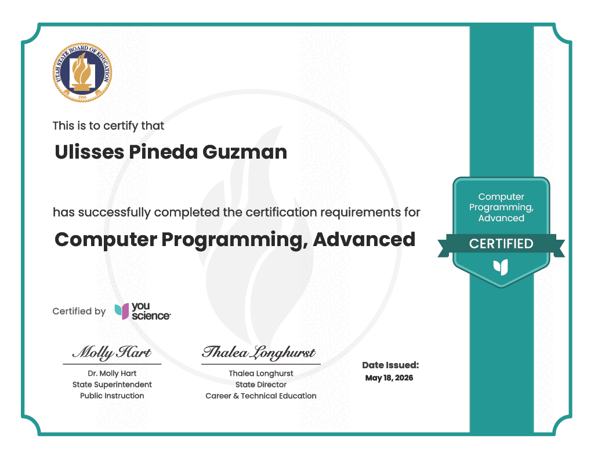
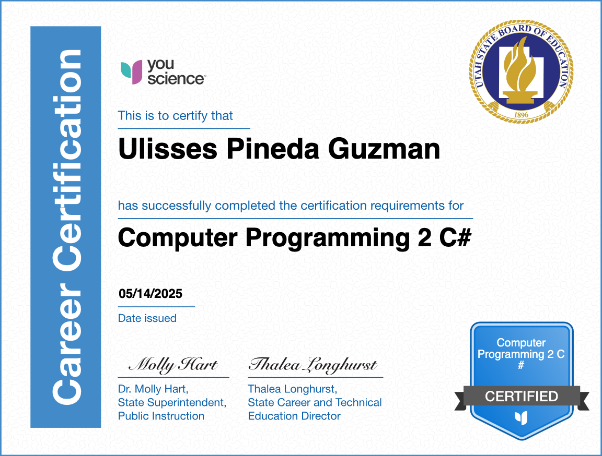
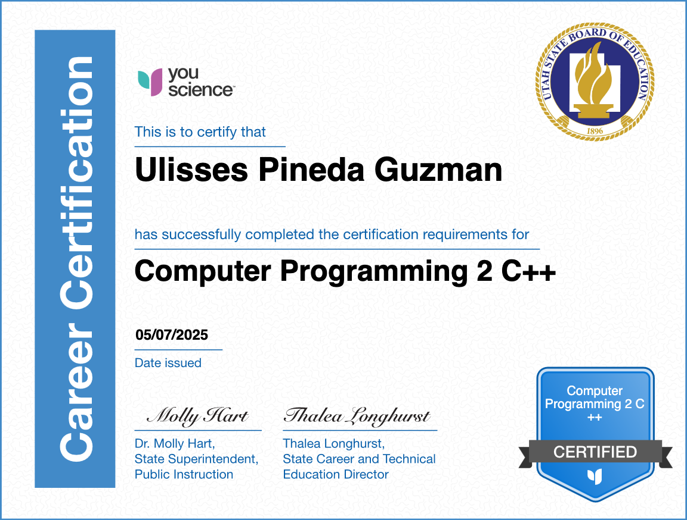
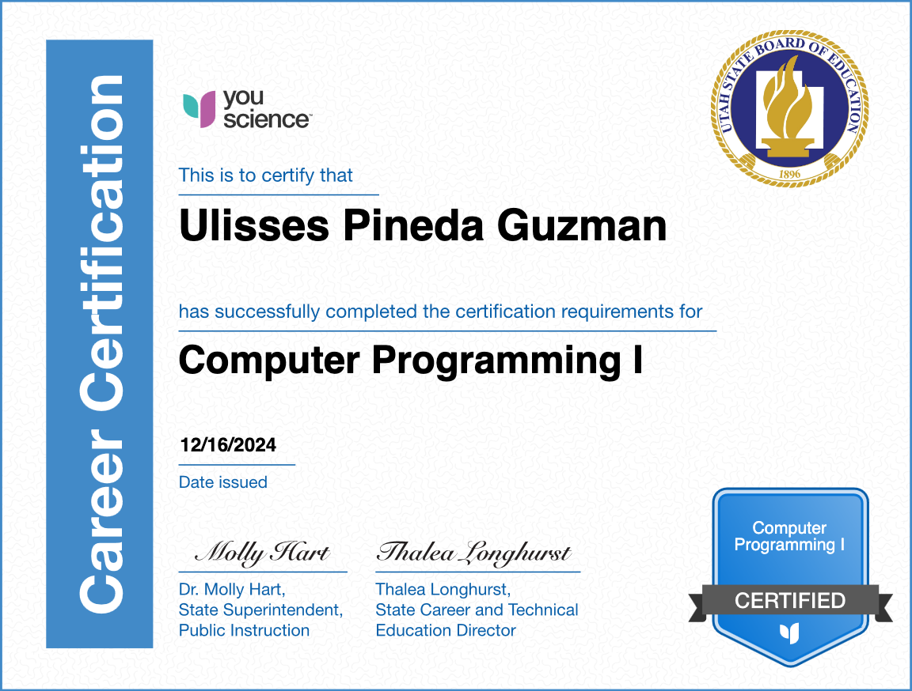

// Portfolio 2025–2026
Developer · Designer · Modder · Audio Visualizer Builder.
Expected graduation 2027.
// 001 — About
Hey — you can call me Rex. I'm a developer and designer projected to graduate in 2027, building things at the intersection of code, audio, and visual experience.
I created a Minecraft Mod back in 2022 and collaborated on a voxel-based game engine. I'm currently focused on MLAV — a music player with real-time audio visualizers and synced lyrics.
Outside code, I work in Adobe Photoshop, Illustrator, and dabble in Blender.
// 002 — Projects
Music & Lyric Audio Visualizer — a music player that dynamically displays synced lyrics while rendering real-time audio visualizers. Supports .wav, .flac, .mp3, .aac, and .ogg.
GitHub ↗A Minecraft mod built from scratch in 2022. Adds custom factions, land-claiming mechanics, and gameplay systems on top of the vanilla experience.
GitHub ↗A collaborative voxel-based game engine — procedurally generated terrain, chunk rendering, and core gameplay systems built as a team project.
GitHub ↗A collaborative weather application providing real-time weather data with an intuitive interface. Features live weather updates, current conditions, and forecast information for multiple locations.
GitHub ↗A space-themed arcade game built with object-oriented design. Features collision detection, progressive level system, and dynamic gameplay mechanics.
GitHub ↗An object-oriented calculator with a graphical user interface and full keyboard functionality. Demonstrates clean OOP architecture and event handling.
GitHub ↗// 003 — Certifications




// 004 — Code Samples
fn compute_spectrum(buffer: &[f32]) -> Vec<f32> {
let mut planner = FftPlanner::new();
let fft = planner.plan_fft_forward(buffer.len());
let mut spectrum = buffer
.iter()
.map(|&s| Complex { re: s, im: 0.0 })
.collect();
fft.process(&mut spectrum);
spectrum.iter().map(|c| c.norm()).collect()
}async function fetchWeather(city) {
try {
const response = await fetch(
`https://api.openweathermap.org/data/2.5/weather?q=${city}&appid=${API_KEY}`
);
const data = await response.json();
return {
temp: data.main.temp,
condition: data.weather[0].main,
humidity: data.main.humidity
};
} catch (error) {
console.error('Weather fetch failed:', error);
}
}fn render_frame(spectrum: &[f32], frame: &mut RenderFrame) {
for (i, &freq) in spectrum.iter().enumerate() {
let height = (freq * 255.0) as u8;
let hue = (i as f32 / spectrum.len() as f32) * 360.0;
frame.draw_bar(i, height, hue_to_rgb(hue));
}
}struct LyricLine {
timestamp: u64,
text: String,
}
fn get_current_lyric(lyrics: &Vec<LyricLine>, elapsed_ms: u64) -> Option<&String> {
lyrics.iter()
.rev()
.find(|line| line.timestamp <= elapsed_ms)
.map(|line| &line.text)
}class ChunkManager {
private:
std::unordered_map<glm::ivec3, Chunk*> chunks;
public:
Chunk* getOrLoadChunk(glm::ivec3 pos) {
if (chunks.count(pos)) return chunks[pos];
Chunk* chunk = new Chunk(pos);
chunk->generate();
chunks[pos] = chunk;
return chunk;
}
};float getTerrainHeight(float x, float z) {
float height = 0.0f;
float amplitude = 1.0f;
float frequency = 0.01f;
float maxHeight = 0.0f;
for (int i = 0; i < 4; i++) {
height += amplitude * perlin(x * frequency, z * frequency);
maxHeight += amplitude;
amplitude *= 0.5f;
frequency *= 2.0f;
}
return (height / maxHeight) * 64.0f;
}// 005 — Curriculum
Build foundational skills in OOP, data structures, algorithms, and software engineering — culminating in a group inventory system.
Deepen skills in advanced algorithms, databases, agile practices, and portfolio development — culminating in an individual portfolio app project.
// 006 — Contact
Open to collaboration, feedback, and cool ideas.